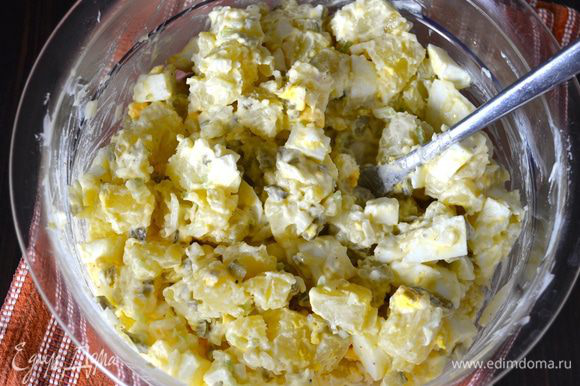

Американский картофельный салат

Ингредиенты:
- Картофель средний 4-5 шт.
- Лук репчатый красный средний 1 шт.
- Болгарский перец крупный ½ шт.
- Сельдерей 2 стебля
- Маринованные огурцы 4 шт.
- Яйца варенные 5 шт.
- Масло оливковое или подсолнечное 3 ст. ложки
- Уксус яблочный 1 ст.ложка
- Зерновая горчица 1 ч. ложка с горкой
- Рассол огуречный 30 мл
- Соль
- Перец или копченная паприка - по вкусу
Приготовление:
1. Сварить картофель.
2. Мелко нарезать лук, перец, сельдерей, огурцы.
3. Яйца нарезать средними дольками.
4. Сделать заправку: смешать масло, горчицу, уксус, рассор и взбить блендером.
5. Нарезать свежесваренный картофель, добавить овощи и смешать с заправкой. Не давить при этом картофель!
6. Дать настояться пару часов, для этого накрыть пленкой и поставить в холодильник.